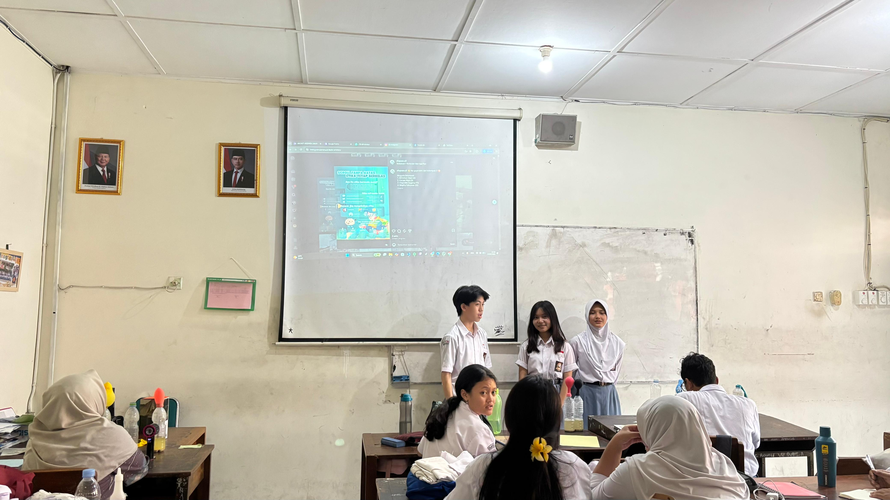

Video Praktik Pembelajaran Siklus 4
Rekaman video pembelajaran terpadu simulasi arsitektur komputer dan penerapan PSE di SMA Negeri 4 Yogyakarta:

Arsitektur Von Neumann & Pembelajaran Sosial Emosional (PSE)
Guru Model: Nur Isnanto Nugroho, S.Pd. • Dosen: Dr. Nuryake Fajaryati, S.Pd.T., M.Pd. • Pamong: Titis Widowati, S.T.
Pengkondisian emosional peserta didik dan apersepsi komponen komputer.
Visualisasi arsitektur bus data CPU, ALU, dan memori RAM.
Siswa praktik menyelidiki siklus instruksi komputer secara interaktif.
Latihan teknik STOP, evaluasi formatif, dan penutupan kelas.
Artefak Pendukung Pembelajaran
Klik tab di bawah untuk meninjau secara mendalam perangkat kurikulum Siklus 4 yang telah diujikan:
Modul Ajar Siklus 4: Arsitektur Von Neumann & Siklus IPO
Desain rencana pembelajaran mendalam yang menggabungkan simulasi perangkat keras CPU/RAM dengan asesmen diagnostik sosial emosional (PSE).
Evaluasi & Refleksi Siklus 4 (LK 4.4)
Dokumentasi utuh evaluasi mandiri dan refleksi pelaksanaan pembelajaran Sistem Operasi dan integrasi PSE di SMA Negeri 4 Yogyakarta.
Refleksi Ke : Empat (Siklus 4)
1. Bagaimana kegiatan apersepsi dapat membantu murid memahami tujuan pembelajaran yang akan dicapai?
Pada siklus keempat, pembelajaran membahas materi Sistem Operasi dengan menggunakan model Discovery Learning. Pada kegiatan apersepsi, saya mengajak peserta didik memikirkan komponen komputer dan apa saja yang bekerja ketika komputer digunakan. Selanjutnya, saya menghubungkan pertanyaan tersebut dengan konsep Input–Process–Output (IPO) yang sebelumnya telah dikenal dalam pembelajaran Informatika. Melalui kegiatan ini, peserta didik diajak mengingat kembali pengetahuan sebelumnya sebagai dasar untuk memahami peran sistem operasi dalam proses kerja komputer.
2. Kegiatan apa saja yang berhasil dan belum berhasil dilaksanakan dalam kegiatan inti?
Pada siklus ini, pembelajaran menggunakan model Discovery Learning dengan materi Sistem Operasi. Kegiatan pembelajaran dirancang agar peserta didik dapat menemukan pemahaman mengenai peran sistem operasi melalui proses pengamatan dan kegiatan belajar yang telah disiapkan. Materi juga dikaitkan dengan konsep IPO agar peserta didik dapat memahami hubungan antara proses kerja komputer dan peran sistem operasi. Evaluasi terhadap kegiatan yang berhasil maupun yang belum berhasil perlu disesuaikan dengan pelaksanaan pembelajaran di kelas.
3. Seberapa efektif penggunaan media pembelajaran untuk melibatkan partisipasi aktif di kelas?
Penggunaan media pembelajaran pada siklus ini diarahkan untuk membantu peserta didik memahami konsep sistem operasi yang berkaitan dengan proses kerja komputer. Pengaitan materi dengan konsep IPO diharapkan dapat memberikan gambaran yang lebih konkret mengenai hubungan antara input, proses, dan output. Efektivitas media dalam meningkatkan partisipasi peserta didik perlu dilihat dari keterlibatan mereka selama kegiatan pengamatan, diskusi, dan pengerjaan tugas.
4. Bagaimana reaksi/respon murid dalam setiap kegiatan dari pembukaan hingga penutupan pembelajaran?
Pada kegiatan pembukaan, peserta didik diajak mengamati dan memikirkan komponen komputer yang bekerja ketika komputer digunakan. Pertanyaan tersebut menjadi pengantar untuk menghubungkan pengetahuan sebelumnya tentang IPO dengan materi Sistem Operasi. Respons peserta didik pada kegiatan inti hingga penutupan perlu disesuaikan dengan kondisi yang benar-benar terjadi selama pembelajaran.
1. Apakah umpan balik dari Guru Pamong untuk praktik pembelajaran mandiri yang lebih baik?
Dalam pelaksanaan PPL, pembahasan bersama guru pamong lebih banyak berkaitan dengan materi yang akan diajarkan. Oleh karena itu, saya melakukan evaluasi terhadap pelaksanaan pembelajaran berdasarkan pengalaman selama mengajar. Pada siklus keempat, saya berusaha menghubungkan materi baru dengan pengetahuan yang telah dimiliki peserta didik agar proses pembelajaran lebih mudah dipahami.
2. Apabila Anda akan melakukan perubahan terhadap metode pembelajaran, unsur apa yang akan Anda ubah untuk metode pembelajaran yang lebih baik?
Apabila melakukan perbaikan pada pembelajaran berikutnya, saya akan lebih memperhatikan tahapan kegiatan Discovery Learning agar peserta didik memperoleh kesempatan untuk mengamati, mengolah informasi, dan menemukan pemahaman secara mandiri. Saya juga akan memberikan contoh yang lebih konkret mengenai hubungan antara IPO dan peran sistem operasi. Dengan demikian, peserta didik diharapkan tidak hanya memahami pengertian sistem operasi, tetapi juga mampu menjelaskan perannya dalam mendukung proses kerja komputer.
1. Kekuatan Pembelajaran
Integrasi Pembelajaran Sosial Emosional (PSE) melalui teknik check-in emosi dan latihan mindfulness terbukti ampuh meredakan kecemasan siswa saat mempelajari konsep abstrak mikroskopis arsitektur komputer.
2. Kendala / Tantangan
Instrumen asesmen refleksi emosional PSE masih menyatu di kertas LKPD fisik, sehingga butuh waktu tambahan bagi guru untuk mengagregasi data emosional secara manual pasca pembelajaran usai.
3. Rencana Tindak Lanjut
Mengembangkan platform web mandiri terpisah khusus untuk pencatatan refleksi emosional peserta didik (Web PSE Tracker) yang terintegrasi basis data cloud agar bisa dipantau secara longitudinal berkelanjutan.
Dokumentasi Kegiatan Siklus 4
Momen-momen bermakna pembelajaran sistem komputer dan penguatan emosional di SMA Negeri 4 Yogyakarta:

Apersepsi Komponen & IPO
Guru memandu siswa mengidentifikasi perangkat Input-Process-Output di Lab Komputer.
Simulasi Interaktif OS
Siswa antusias mengamati pergerakan paket data biner antar komponen internal CPU di simulator web.

Penyelidikan Lapisan OS
Kelompok siswa mendiskusikan kaitan antara kernel, device driver, dan aplikasi pengguna.

Check-in Emosional Akhir
Penerapan asesmen sosial emosional membantu siswa merefleksikan rasa percaya diri belajarnya.